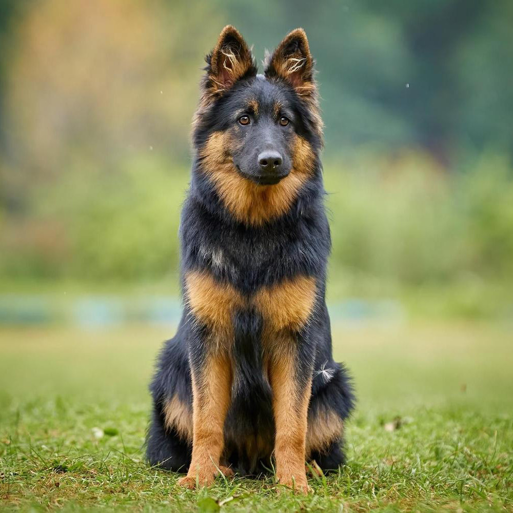

Собака домашня - це ссавець родини псових. Вони були першими тваринами, яких одомашнила людина понад 15 тисяч років тому. Собаки виконують безліч ролей: від компаньйонів і охоронців до рятувальників та поводирів. Вони відрізняються надзвичайною відданістю своєму господарю.
Існує понад 300 різних порід собак, які різняться за розмірами, формою тіла, кольором шерсті та характером. Наприклад, чихуахуа є найменшою породою, а англійський мастиф - однією з найбільших. Кожна порода має свої унікальні генетичні особливості, які впливають на їх поведінку та здібності.
Догляд за собакою вимагає відповідальності, правильного харчування та регулярних прогулянок. Важливо забезпечити тварині своєчасні ветеринарні огляди та вакцинацію. Навчання та соціалізація з раннього віку допоможуть виростити слухняного улюбленця. Тільки за умови любові та турботи собака стане вашим найкращим другом на довгі роки.